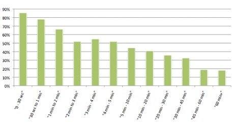
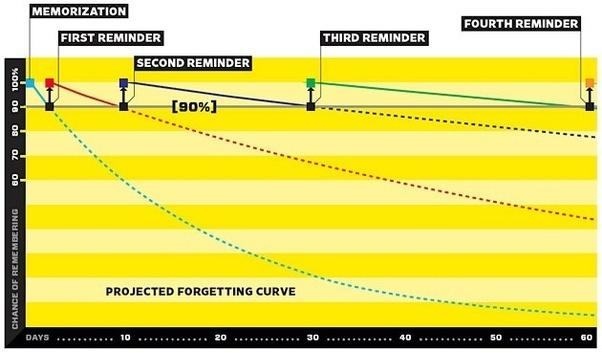

学习
学习方法
学习的原因
人学习的原因是为了获得更多的知识，更加了解这个世界，并将它们使用在生活中使自己过得更好。所以对于我来说学习知识的意义就在于应用它们。透过学习，我们能够做到从未能做到的事情，重新认知这个世界及我们跟它的关系，以及扩展创造未来的能量。人们可以把认知过程分为6个阶段，即知识、理解、应用、分析、综合、评价。面对不同的学习领域，所需要达到的认知程度也是不同。对于某领域的专家那么就可以评价，而这个知识对于自己的生活关系不大时，只需达到第一个阶段即可。
另外成长型心智的人也会更加乐于学习。他们倾向于超越自己，往往会以自身进步为标准，常常处于尝试或探索状态，最终是自我解放，在不断学习中不断成长。
当今世界的发展速度太快，新的知识层出不穷，如果不持续学习，一直使用以前的方法，那么很有可能被他人淘汰。没有个人核心竞争力的话那终将被他人取代，这就是社会的残酷。而找寻个人特长的方法就是不断学习，走在他人的前面。
学习能力
学习能力的定义
学习能力或称专家精神的概括性行为表现：紧跟本专业内新知识、新技术动态，并运用到实际问题解决，能在本领域的研究项目中发挥主要作用，乐于分享知识经验。
- 动机 (motives)：从动机上，学习能力强的人，必定是一个认知需求水平比较高的个体。一个认知需求高的个体，肯定是格物致知的人，必定在某些领域掌握更加精深或偏向原理性的基础知识，所以也许他的方向很偏，但总能分享一些这样的知识点，而且这些知识点不应该是松散的，而应该是聚焦莫一或某几个领域的。
- 个性特质 (traits)：从个性特质上，学习能力强的个体和一般的个体也是有差异的，比如爱钻研、爱看书。学习本身对他来说会比较容易，但更应看到的是，学习过程本身对这类人也是一种享受。
- 自我形象 (self-image)：学习能力好的人，绝对不是学过什么就扔一边的人， 他们优秀的学习动机和能力能使得他们成为一个领域的专家
- 社会角色 (social role, values)：一个学习能力强的人，是不会自己憋在肚子里“财不外露”的，而且大部分学习能力强的人遇到同一领域的共同爱好者，会倾囊相倒。因此，知识的分享，也是学习能力强的人的一种表现
- 经验 (experience)：你曾经成功迅速学习过哪门知识，掌握过什么能力与技巧？分享一下你之前所需的知识与技能吧（这块跟上面分享心得是有差异的）。这块实际上你就不用听内容，你就看他表情和语气语调以及呼吸频率等非语言线索，真正学习能力强并通过学习对工作有过帮助的人，会自如地侃侃而谈，看他讲话的感觉，肯定特享受。换句话说，这时候他的自我效能感爆棚，感觉这一亩三分地，自己就是真正的主人。
- 知识 (knowledge)：你知道你所从事职业的新兴思想潮流吗？你知道最新崛起的几位大家是谁吗？你能说说你最喜欢的职业领域几位大牛吗，能比较一下他们的成就和思想吗？作为面试官，那怕你面试的是个土木工程师而你对土木一窍不通也没关系，如果他在编，你就让他编，放心吧，一个人讲的时候的流畅程度和自信程度是装不出来的，如果没有点实在货，三句话就露怯。
学习知识的来源
我的学习的知识分为以下几大块：
- 书籍：首先从知乎或者微信推送了解到这本书，之后在douban或者goodread看评价。如果比较经典那么我就会选择阅读，阅读的方式为kindle或者图书馆借阅。
- 知识分享类网站：知乎和quora 这上面有很多的大牛分享自己的知识。有的专业性很强，有的则是非常简单易懂。
- 资讯类网站：cnbeta 36氪，果壳等这些都是以新闻的方式让我了解世界最新的资讯
- 课堂与网络课堂：随着本科的结束，在学校内学习的时间变少，网上的课堂可以系统的讲解一个方面的知识。
- 媒体：TED，podcast，纪录片，电影。长视频的现在看的比较少，但这也是一个获得知识的很好的途径。很多内容制作比较精致。
- 人：身边的大牛也是我学习的榜样。从别人的思维方式到表达能力都是学习的好材料。
不同材料的学习方法

人的专注度是在随着时间下降的，所以在一段时间的工作后休息是必要的。
书籍
读书需要一定的步骤，目前我是读三遍书：
- 区分书本的重要性，对于粗读的文科类，通俗类书本，快速读一遍。对于觉得好的段落进行折角，记录。对于需要精读的书则是很慢的阅读，尤其是理科类书籍，快速看就无法理解。
- 第二遍对于粗读的书则是只看折角的地方，勾画出有感处的句子。对于第一遍细读的书籍则是第二遍写书籍结构，包括重点。
- 第三遍做读书笔记，将有所感悟的段落写下，加上自己的见解。
在读书时注意自己不学习结论，而是学习他的思维方式！
课堂,mooc
对于课堂的知识学习可以使用SQ3R的方法：
- survey (skim background)
- question
- read
- recite (复述)
- review
在复习过后增加自我测试的环节也是很有必要的，可以使用anki或者做书本后面的练习。 
另外由于遗忘曲线的存在，经常回看自己之前的总结也是很重要的：
- 每一次都复习一下前一次的知识
- 第二天复习今日所学
- 中期测试自己掌握的程度，修改之后的学习策略
在复习考试时有一些建议：
- 把自己沉浸在不同的来源的信息之中，可以加深理解。
- 做mind map，看清楚之间的结构
- frequent revisit
讲座，人际沟通
在听讲座的时候，首先了解讲座的嘉宾的来历以及讲的话题的背景资料，然后从中想一些问题，在讲座中自己希望听到什么方面的知识。之后在听讲座时可以通过笔记的方式记录演讲者的主要观点。结束后可以对于感兴趣的部分查阅资料，形成自己的看法。
在人际沟通方面，结合《沟通的艺术》我也可以在和他人沟通时注意他人处理事物的方式，从中学习。
网络资讯
这里主要指知乎，微信文章，quora，pocket中的信息。网络上的资讯浩如烟海，看到的不一定是精华。应该从准备这个读物的时间/阅读这个读物的时间,越高的进行阅读，上网的关键是有很强的目的性，以我为主，不被无关的信息左右的精品进行阅读。字数长不一定花的时间也长，所以在阅读前一定要仔细甄别。
- 首先粗看，标题党，read later
- 看开头和结尾以及其中的图，黑字，再决定要不要细看
- 细看时先想好自己希望从中获得什么，之后再阅读，总结自己获得的知识，进行输出。
复习
学了东西不复习很快就会忘记，所以需要我反复看。我主要采用anki进行复习。
高效学习的方法
刻意练习
有目的的练习的要点：
- 具有定义明确的特定目标，这样可以有效地引导你练习
- 是专注的，取得进步需要全神贯注
- 包含反馈，人们在练习时需要知道自己在哪些方面还有不足，以及怎么会存在这些不足
- 需要走出舒适区，不然就无法进步
刻意练习具有以下特点：
- 刻意练习发展的技能是别人已经想出如何提高的技能，已经有训练方案的。方案应该由导师或教练来设计和监管。
- 刻意练习发生在人们的舒适区之外，并且要求学生不断尝试那些刚好超出他们能力之外的事情，需要付出近乎最大限度的努力
- 刻意练习包含良好定义的特定目标
- 刻意练习包含反馈，期初来自导师，后期来自自己
- 刻意练习通过着重关注过去获取的技能的某些特定方面，致力于有针对性地提高那些方面。